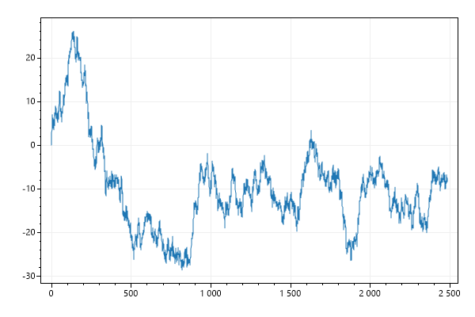
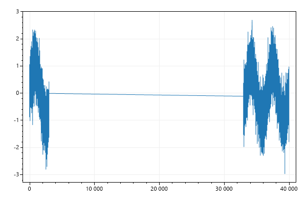
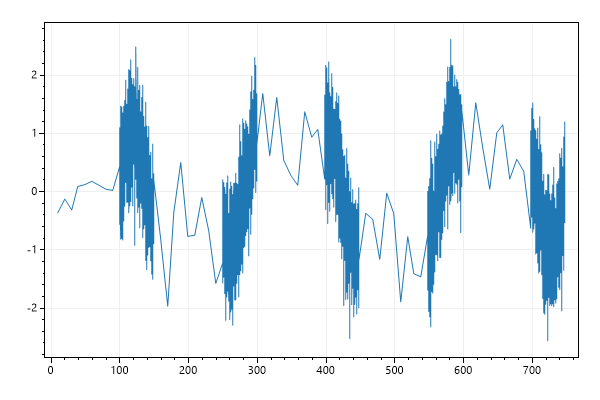
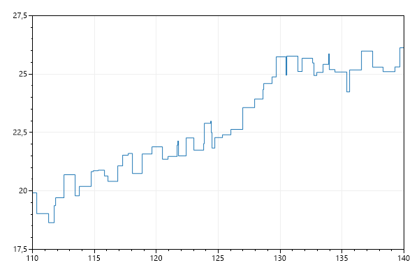
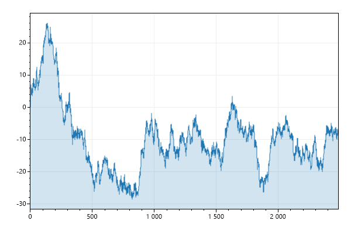
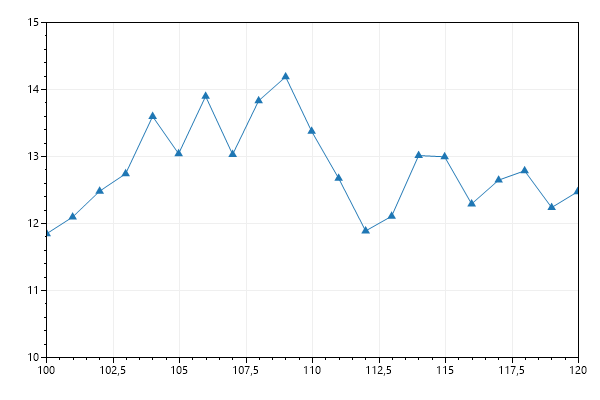
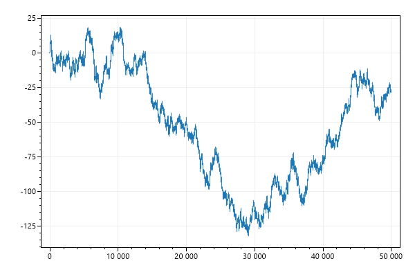
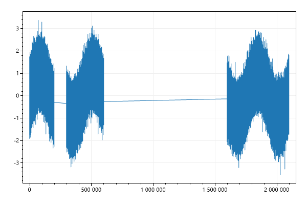
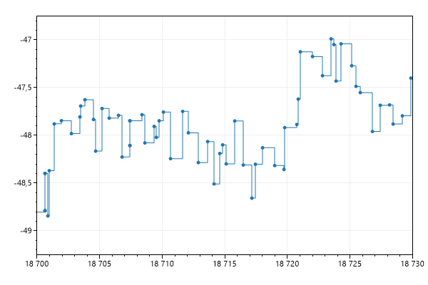

This page contains recipes for the SignalXY category.
Visit the Cookbook Home Page to view all cookbook recipes.
Visit the Cookbook Home Page to view all cookbook recipes.
SignalXY Quickstart
SignalXY is a speed-optimized plot for displaying vaues (Ys) with unevenly-spaced positions (Xs) that are in ascending order. If your data is evenly-spaced, Signal and SignalConst is faster.
var plt = new ScottPlot.Plot(600, 400);
(double[] xs, double[] ys) = DataGen.RandomWalk2D(new Random(0), 5_000);
plt.AddSignalXY(xs, ys);
plt.SaveFig("signalxy_quickstart.png");

SignalXY Offset
SignalXY plots can have X and Y offsets that shift all data by a defined amount.
var plt = new ScottPlot.Plot(600, 400);
(double[] xs, double[] ys) = DataGen.RandomWalk2D(new Random(0), 5_000);
var sig = plt.AddSignalXY(xs, ys);
sig.OffsetX = 10_000;
sig.OffsetY = 100;
plt.SaveFig("signalxy_offset.png");
Signal Data with Gaps
Signal with defined Xs that contain gaps
var plt = new ScottPlot.Plot(600, 400);
var rand = new Random(0);
int pointCount = 10_000;
double[] sine = DataGen.Sin(pointCount, 3);
double[] noise = DataGen.RandomNormal(rand, pointCount, 0, 0.5);
double[] ys = sine.Zip(noise, (s, n) => s + n).ToArray();
double[] xs = Enumerable.Range(0, pointCount)
.Select(x => (double)x)
.Select(x => x > 3_000 ? x + 10_000 : x)
.Select(x => x > 7_000 ? x + 20_000 : x)
.ToArray();
plt.AddSignalXY(xs, ys);
plt.SaveFig("signalxy_gaps.png");

Different Densities
Signal with mised low and high density data
var plt = new ScottPlot.Plot(600, 400);
Random rand = new(0);
int pointCount = 5_000;
double[] sine = DataGen.Sin(pointCount, 3);
double[] noise = DataGen.RandomNormal(rand, pointCount, 0, 0.5);
double[] ys = sine.Zip(noise, (s, n) => s + n).ToArray();
double[] xs = new double[pointCount];
double x = 0;
for (int i = 0; i < pointCount; i++)
{
bool lowDensityPoint = (i % 1_000) < 10;
x += lowDensityPoint ? 10 : .05;
xs[i] = x;
}
plt.AddSignalXY(xs, ys);
plt.SaveFig("signalxy_density.png");

SignalXY Step Mode
Data points can be connected with steps (instead of straight lines).
var plt = new ScottPlot.Plot(600, 400);
(double[] xs, double[] ys) = DataGen.RandomWalk2D(new Random(0), 5_000);
var sigxy = plt.AddSignalXY(xs, ys);
sigxy.StepDisplay = true;
sigxy.MarkerSize = 0;
plt.SetAxisLimits(110, 140, 17.5, 27.5);
plt.SaveFig("signalxy_step.png");

SignalXY with Fill
Various options allow shading above/below the signal data.
var plt = new ScottPlot.Plot(600, 400);
(double[] xs, double[] ys) = DataGen.RandomWalk2D(new Random(0), 5_000);
var sigxy = plt.AddSignalXY(xs, ys);
sigxy.FillBelow();
plt.Margins(x: 0);
plt.SaveFig("signalxy_fillBelow.png");

Customize Markers
SignalXY plots have markers which only appear when they are zoomed in.
var plt = new ScottPlot.Plot(600, 400);
var rand = new Random(0);
double[] ys = DataGen.RandomWalk(rand, 200);
double[] xs = DataGen.Consecutive(200);
var sig = plt.AddSignalXY(xs, ys);
sig.MarkerShape = MarkerShape.filledTriangleUp;
sig.MarkerSize = 10;
plt.SetAxisLimits(100, 120, 10, 15);
plt.SaveFig("signalxy_markers.png");

SignalConst with X and Y data
SignalXYConst is a speed-optimized plot for displaying vaues (Ys) with unevenly-spaced positions (Xs) that are in ascending order. If your data is evenly-spaced, Signal and SignalConst is faster.
var plt = new ScottPlot.Plot(600, 400);
// generate random, unevenly-spaced data
Random rand = new Random(0);
int pointCount = 100_000;
double[] ys = new double[pointCount];
double[] xs = new double[pointCount];
for (int i = 1; i < ys.Length; i++)
{
ys[i] = ys[i - 1] + rand.NextDouble() - .5;
xs[i] = xs[i - 1] + rand.NextDouble();
}
plt.AddSignalXYConst(xs, ys);
plt.SaveFig("signalxyconst_quickstart.png");

Different data types for xs and ys
SignalXYConst with (int)Xs and (float)Ys arrays
var plt = new ScottPlot.Plot(600, 400);
Random rand = new Random(0);
int pointCount = 1_000_000;
double[] sine = DataGen.Sin(pointCount, 3);
double[] noise = DataGen.RandomNormal(rand, pointCount, 0, 0.5);
float[] ys = sine.Zip(noise, (s, n) => s + n).Select(x => (float)x).ToArray();
int[] xs = Enumerable.Range(0, pointCount)
.Select(x => (int)x)
.Select(x => x > 500_000 ? x + 1_000_000 : x)
.Select(x => x > 200_000 ? x + 100_000 : x)
.ToArray();
plt.AddSignalXYConst(xs, ys);
plt.SaveFig("signalxyconst_types.png");

SignalConst Step Mode
Data points can be connected with steps (instead of straight lines).
var plt = new ScottPlot.Plot(600, 400);
// generate random, unevenly-spaced data
Random rand = new Random(0);
int pointCount = 100_000;
double[] ys = new double[pointCount];
double[] xs = new double[pointCount];
for (int i = 1; i < ys.Length; i++)
{
ys[i] = ys[i - 1] + rand.NextDouble() - .5;
xs[i] = xs[i - 1] + rand.NextDouble();
}
var sigxyconst = plt.AddSignalXYConst(xs, ys);
sigxyconst.StepDisplay = true;
plt.SetAxisLimits(18700, 18730, -49.25, -46.75);
plt.SaveFig("signalxyconst_step.png");
